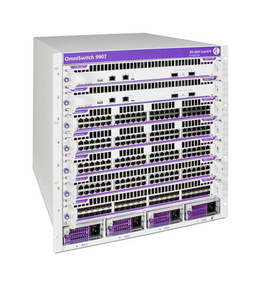

bp-os9900-datasheet

R（触发场景）
- 大型园区核心/汇聚/边缘、DC 高密度接入：模块化机箱选型（9907 11RU vs 9912 17.25RU）
- GbE 密度 + PoE 核心：288/480 GbE、10800W/7920W PoE 预算规划
- 线卡混插与按需扩容（1G→10G→40/100G 投资保护）
- CMM/CFM/线卡/bundle 订购组合核对；"supported in future" 档位识别
I（核心理念）
OS9900 是多 Terabit 模块化机箱："modular design provides investment protection allowing for scaling out with future inline upgrades"（原文p145 ）；CMM 控制面虚拟机化支撑升级高可用（原文p146 ）；Intelligent Fabric/Auto-Fabric 零配置开局。层级：产品线最顶端的模块化核心，下接 6900（固定核心）。
A1（与相邻系列选型差异）
- vs OS6900：中型园区/DC ToR 用 6900（1RU 固定）；要 GbE 密度 + PoE 核心、按线卡扩容、双机箱 VC 用 9900（C3）。
- vs OS6920：6920 是 400G AI/HPC 专用骨干；9900 强在接口多样性（1G~100G）与 PoE，无 400G。
- 9907 与 9912 的关键差异：槽位（7 vs 12 前置 NI）、最大密度、PoE 上限（10800W vs 7920W）、部分多千兆线卡仅 9907 支持。
A2（规格细节速查表）
机箱与容量（原文p147 /原文p153 /原文p154 ）： | 项目 | OS9907（11RU） | OS9912（17.25RU） | |---|---|---| | 槽位 | 前 7（1 CMM + 1 混合 + 5 NI）+ 后 4 CFM | 前 12（含 2 CMM）+ 后 4 CFM | | 最大密度 | 288 GbE / 240 SFP+ / 240 10GBase-T / 80 多千兆 / 108 QSFP28 | 480 GbE / 480 SFP+ / 480 10GBase-T / 208 QSFP28 | | 机箱容量 | 双 CFM2 25.6Tb/s（四 CFM2 51.2Tb/s 未来） | 双 CFM 51.2Tb/s（四 CFM 102.4Tb/s* 未来） | | PoE 上限 | 10800W | 7920W | | 重量（RCB） | 32.83kg | 64.36kg | 管理/网板（原文p154 ）：OS99-CMM（2x40G QSFP+，仅 9907）；OS99-CMM2（4x100G QSFP28，9907 需 AOS 8.10R2 + CFM2，兼容 9912）；1+1 冗余 CMM；CFM2 12.8Tb/s（9907）/CFM 25.6Tb/s（9912）。 线卡矩阵（原文p154 /原文p155 /原文p156 /原文p157 ）：GNI-48（48 GbE RJ45）/GNI-U48（48 GbE SFP）/GNI-P48（48 GbE PoE）；XNI-48（48 10GBase-T）/XNI-U48（48 SFP+）/XNI-U24（24 SFP+）/XNI-U12Q（12 SFP+ + 1 QSFP+，仅 9907）；XNI-P48Z16（32x10G + 16 多千兆 PoE）/XNI-P24Z8/XNI-UP24Q2（仅 9907）；CNI-U8（8 QSFP28）/CNI-U20（20 QSFP28，8 口可拆 4x10/25G）。全系线卡 MPLS ready + MACsec（免费站点许可 OS-SW-MACSEC，原文p157 ）。 PoE 体系（原文p147 ）：PoE 线卡 8 口 75W HPoE + 40 口 30W；每线卡 1800W PoE；OS99-PS-A 3000W AC / OS99-PS-D 2500W DC、4 电源槽、负载分摊、热插拔不断业务（原文p148 /原文p155 ）。 上联与堆叠：双 OS9907 VC 到 480x10G/576 GbE（原文p147 ）；双 OS9912 VC 960x10G/960 GbE/400G——"Supported in future"（X10）；CMM 1+1 + 虚拟机化 + ISSU（，原文p146 /原文p152 ）。 Layer 特性（原文p149 /原文p150 ）：SPB-M（EVC/E-Line/E-LAN/E-Tree、I-SID EVPN）；完整 IPv4/IPv6 路由（OSPF/IS-IS/BGP/VRF 导出导入）；MACSec 全以太链路（原文p149 ）；OpenFlow 1.3.1/1.0 + OpenStack；4094 VLAN、9216B 巨帧。 环境/认证：0~45°C；FIPS 140-2/CC EAL2/NDcPP/JITC/TAA（原文p150 ）；机箱含 3 风扇槽。 规格红线：四 CFM 与双 9912 VC 大数字为未来支持；多千兆 PoE 线卡不支持 9912；PoE 仅 af/at（30W/前 8 口 75W）。
E（适用场景）
- 大型园区核心：480 GbE + 7920W PoE（9912）或 288 GbE + 10800W（9907），线卡按楼层/业务逐步扩容（C3）
- 核心升级不中断：CMM 虚拟机化 + 1+1 冗余 + ISSU（C10）
- SPB fabric 大 L2：E-Line/E-LAN/E-Tree 服务 + Auto-Fabric 零配置（原文p150 ）
- 按 bundle 订购开局：CB1/CB2（单 CMM/CFM/PS）与 RCB1/RCB2（全冗余）两条路线（原文p155 /原文p156 ）
B（限制与坑）
- 双 OS9912 VC 的 960x10G/960 GbE/400G 规格标 "*Supported in future"（X10，原文p147 ）——方案按已交付档位（双 9907 480x10G）设计
- PoE 线卡仅前 8 口 75W（HPoE）、其余 30W（X11，原文p147 ）——AP1570 级大功率设备映射到指定口段
- 多千兆 PoE 与部分混合线卡（P48Z16/P24Z8/UP24Q2/U12Q）不支持 OS9912（原文p157 "Not supported on OS9912"）——9912 选型时核线卡兼容表
- 9907 用 CMM2 需要 AOS 8.10R2 + CFM2（原文p153 注 *）
- 四 CFM 槽位 CFM3/CFM4 当前保留未激活（原文p153 ）——容量规划按双 CFM
- 采购按 bundle（CB/RCB）下单，包内 CMM 代数（CMM/CMM2）与电源制式要写清（X21 类似坑，原文p155 ）
- MACsec 需免费站点许可 OS-SW-MACSEC（原文p157 ）
来源：bp-omniswitch-datasheets DOC 15（p145-158，DID00358015EN October 2024）；verified.md C3/C10/C11/X10/X11/P23/P24/F1/F3/F4